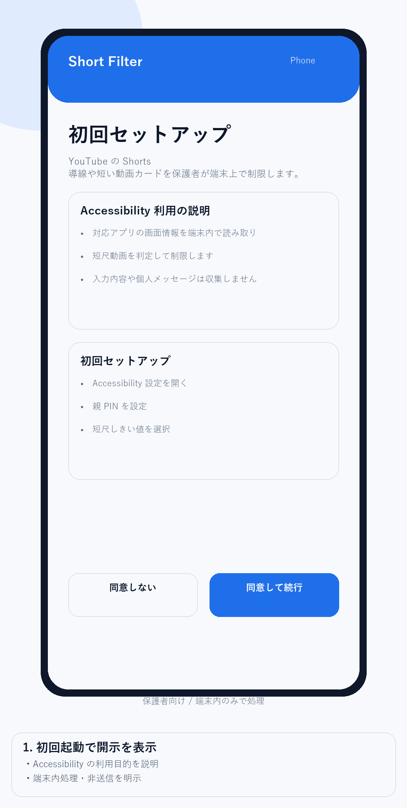

Short Filter Accessibility Demo
Google Play Console の ユーザー補助サービス申告 用に、認識しやすい開示と同意の流れをまとめた短いデモです。

- 初回起動で開示を表示
- 同意してから Accessibility 設定へ進む
- 同意しない場合の分岐を用意
- ホーム画面から説明を再表示できる
公開 URL: https://ritonobi0120-tech.github.io/short-filter-privacy-site/accessibility-demo.html